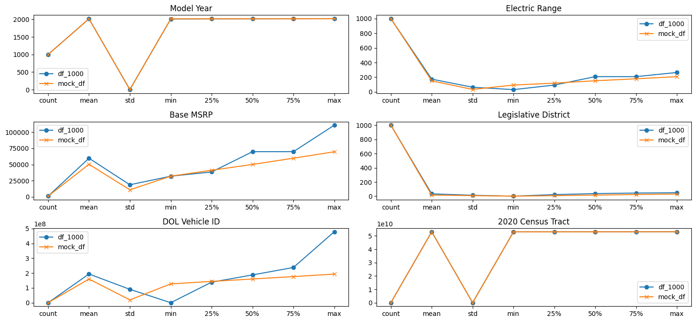
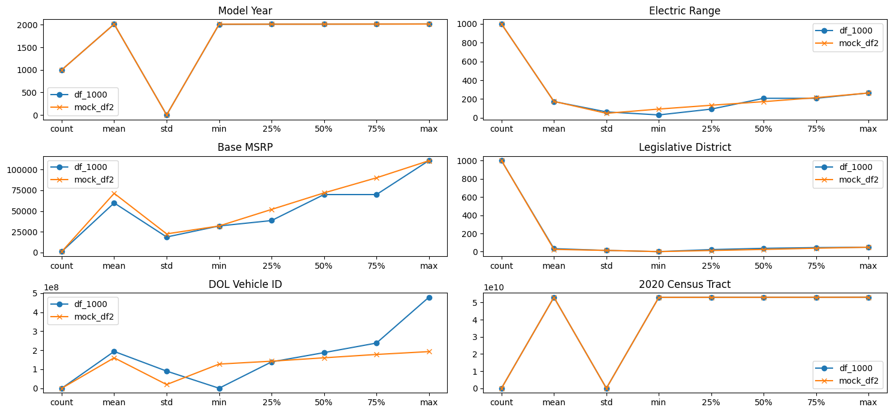

import pandas as pd
import numpy as np
import matplotlib.pyplot as plt
import seaborn as snsAssignment for Week 5
The is the Electric vehicle popoulation in the state of Washington and sourced from https://catalog.data.gov/dataset/electric-vehicle-population-data
df = pd.read_csv('data/Electric_Vehicle_Population_Data.csv')
df = df[(df['Clean Alternative Fuel Vehicle (CAFV) Eligibility'] ==
'Clean Alternative Fuel Vehicle Eligible') & (df['Base MSRP'] > 0)].drop('Postal Code', axis=1)df_1000 = df.iloc[:1000, :]
df_1000.shape(1000, 16)df_1000.to_csv('workset.csv', index=False)
# upload to mockaroodf_1000.describe()| Model Year | Electric Range | Base MSRP | Legislative District | DOL Vehicle ID | 2020 Census Tract | |
|---|---|---|---|---|---|---|
| count | 1000.00000 | 1000.000000 | 1000.000000 | 1000.000000 | 1.000000e+03 | 1.000000e+03 |
| mean | 2014.27200 | 173.791000 | 59771.040000 | 33.420000 | 1.938014e+08 | 5.303478e+10 |
| std | 2.02042 | 63.306722 | 18632.569288 | 13.827103 | 9.023582e+07 | 1.231253e+07 |
| min | 2008.00000 | 31.000000 | 31950.000000 | 1.000000 | 2.014000e+05 | 5.300501e+10 |
| 25% | 2013.00000 | 93.000000 | 38483.750000 | 23.000000 | 1.386559e+08 | 5.303301e+10 |
| 50% | 2014.00000 | 208.000000 | 69900.000000 | 37.000000 | 1.874724e+08 | 5.303302e+10 |
| 75% | 2016.00000 | 208.000000 | 69900.000000 | 45.000000 | 2.377686e+08 | 5.303303e+10 |
| max | 2019.00000 | 265.000000 | 110950.000000 | 49.000000 | 4.788591e+08 | 5.307700e+10 |
mock_df = pd.read_csv('MOCK_DATA.csv')
mock_df.describe()| Model Year | Electric Range | Base MSRP | Legislative District | DOL Vehicle ID | 2020 Census Tract | |
|---|---|---|---|---|---|---|
| count | 1000.000000 | 1000.000000 | 1000.000000 | 1000.000000 | 1.000000e+03 | 1.000000e+03 |
| mean | 2014.469000 | 149.921000 | 50401.017500 | 15.952000 | 1.598606e+08 | 5.304201e+10 |
| std | 1.104653 | 33.420304 | 10813.352181 | 8.853818 | 1.899350e+07 | 2.024245e+07 |
| min | 2013.000000 | 93.000000 | 31956.600000 | 1.000000 | 1.271747e+08 | 5.300802e+10 |
| 25% | 2013.750000 | 119.300000 | 41136.050000 | 8.000000 | 1.437425e+08 | 5.302391e+10 |
| 50% | 2014.000000 | 151.950000 | 50156.700000 | 16.000000 | 1.600739e+08 | 5.304218e+10 |
| 75% | 2015.000000 | 178.650000 | 59800.625000 | 24.000000 | 1.763463e+08 | 5.306036e+10 |
| max | 2016.000000 | 208.000000 | 69796.900000 | 31.000000 | 1.929495e+08 | 5.307689e+10 |
summary_combined = pd.concat(
[df_1000.describe(), mock_df.describe()], keys=['df_1000', 'mock_df'])Difference between the real values and mockaroo generated data.
diff_summary = summary_combined.loc['df_1000'] - \
summary_combined.loc['mock_df']
diff_summary| Model Year | Electric Range | Base MSRP | Legislative District | DOL Vehicle ID | 2020 Census Tract | |
|---|---|---|---|---|---|---|
| count | 0.000000 | 0.000000 | 0.000000 | 0.000000 | 0.000000e+00 | 0.000000e+00 |
| mean | -0.197000 | 23.870000 | 9370.022500 | 17.468000 | 3.394080e+07 | -7.232246e+06 |
| std | 0.915767 | 29.886418 | 7819.217107 | 4.973286 | 7.124231e+07 | -7.929920e+06 |
| min | -5.000000 | -62.000000 | -6.600000 | 0.000000 | -1.269733e+08 | -3.006389e+06 |
| 25% | -0.750000 | -26.300000 | -2652.300000 | 15.000000 | -5.086594e+06 | 9.100871e+06 |
| 50% | 0.000000 | 56.050000 | 19743.300000 | 21.000000 | 2.739859e+07 | -9.154662e+06 |
| 75% | 1.000000 | 29.350000 | 10099.375000 | 21.000000 | 6.142233e+07 | -2.732368e+07 |
| max | 3.000000 | 57.000000 | 41153.100000 | 18.000000 | 2.859096e+08 | 1.165815e+05 |
PLotting the numerical columns of each data set
columns_to_plot = ['Model Year', 'Electric Range',
'Base MSRP', 'Legislative District', 'DOL Vehicle ID', '2020 Census Tract']
fig, axes = plt.subplots(nrows=3, ncols=2, figsize=(15, 7))
axes = axes.flatten()
for i, column in enumerate(columns_to_plot):
axes[i].plot(summary_combined.loc['df_1000', column],
label='df_1000', marker='o')
axes[i].plot(summary_combined.loc['mock_df', column],
label='mock_df', marker='x')
axes[i].set_title(column)
axes[i].legend()
plt.tight_layout()
plt.show()
diff_summary| Model Year | Electric Range | Base MSRP | Legislative District | DOL Vehicle ID | 2020 Census Tract | |
|---|---|---|---|---|---|---|
| count | 0.000000 | 0.000000 | 0.000000 | 0.000000 | 0.000000e+00 | 0.000000e+00 |
| mean | -0.197000 | 23.870000 | 9370.022500 | 17.468000 | 3.394080e+07 | -7.232246e+06 |
| std | 0.915767 | 29.886418 | 7819.217107 | 4.973286 | 7.124231e+07 | -7.929920e+06 |
| min | -5.000000 | -62.000000 | -6.600000 | 0.000000 | -1.269733e+08 | -3.006389e+06 |
| 25% | -0.750000 | -26.300000 | -2652.300000 | 15.000000 | -5.086594e+06 | 9.100871e+06 |
| 50% | 0.000000 | 56.050000 | 19743.300000 | 21.000000 | 2.739859e+07 | -9.154662e+06 |
| 75% | 1.000000 | 29.350000 | 10099.375000 | 21.000000 | 6.142233e+07 | -2.732368e+07 |
| max | 3.000000 | 57.000000 | 41153.100000 | 18.000000 | 2.859096e+08 | 1.165815e+05 |
Summary
- Data Description:
- The dataset contains information about electric vehicles in Washington state, filtered to include only those eligible for Clean Alternative Fuel Vehicle (CAFV) and with a Base MSRP greater than 0.
- The dataset was split into a subset of 1000 entries (
df_1000) and saved for further analysis.
- Mock Data:
- A mock dataset (
mock_df) was generated using Mockaroo to simulate similar data for comparison.
- A mock dataset (
- Key Observations:
- There are noticeable differences in the mean values of Electric Range and Base MSRP between the real and mock datasets.
- The mock data tends to have a much lower variation in some columns, as indicated by the standard deviation.
- The mock data does not have the same max MSRP compared to the real data.
- The plots provide a visual comparison, showing how the distributions of key numerical columns differ between the real and mock datasets.
Improvements
To improve the accuracy of a fake dataset generated by Mockaroo, we can try using options like dynamic and weighted instead of random. The weighted option allows you to specify how frequently certain values should appear, which is useful for creating realistic distributions in categorical fields. The dynamic option, on the other hand, is effective for creating dependencies between fields.
mock_df2 = pd.read_csv('dynamicMock.csv')
summary_combined2 = pd.concat(
[df_1000.describe(), mock_df2.describe()], keys=['df_1000', 'mock_df2'])
summary_combined2| Model Year | Electric Range | Base MSRP | Legislative District | DOL Vehicle ID | 2020 Census Tract | ||
|---|---|---|---|---|---|---|---|
| df_1000 | count | 1000.000000 | 1000.000000 | 1000.000000 | 1000.000000 | 1.000000e+03 | 1.000000e+03 |
| mean | 2014.272000 | 173.791000 | 59771.040000 | 33.420000 | 1.938014e+08 | 5.303478e+10 | |
| std | 2.020420 | 63.306722 | 18632.569288 | 13.827103 | 9.023582e+07 | 1.231253e+07 | |
| min | 2008.000000 | 31.000000 | 31950.000000 | 1.000000 | 2.014000e+05 | 5.300501e+10 | |
| 25% | 2013.000000 | 93.000000 | 38483.750000 | 23.000000 | 1.386559e+08 | 5.303301e+10 | |
| 50% | 2014.000000 | 208.000000 | 69900.000000 | 37.000000 | 1.874724e+08 | 5.303302e+10 | |
| 75% | 2016.000000 | 208.000000 | 69900.000000 | 45.000000 | 2.377686e+08 | 5.303303e+10 | |
| max | 2019.000000 | 265.000000 | 110950.000000 | 49.000000 | 4.788591e+08 | 5.307700e+10 | |
| mock_df2 | count | 1000.000000 | 1000.000000 | 1000.000000 | 1000.000000 | 1.000000e+03 | 1.000000e+03 |
| mean | 2014.448000 | 175.094300 | 71351.739310 | 25.267000 | 1.602906e+08 | 5.304138e+10 | |
| std | 1.142191 | 48.081129 | 22410.239209 | 14.257875 | 1.948126e+07 | 1.973269e+07 | |
| min | 2013.000000 | 93.500000 | 31964.310000 | 1.000000 | 1.271989e+08 | 5.300797e+10 | |
| 25% | 2013.000000 | 134.050000 | 51932.655000 | 13.000000 | 1.424390e+08 | 5.302366e+10 | |
| 50% | 2014.000000 | 172.450000 | 71888.745000 | 25.000000 | 1.602752e+08 | 5.304088e+10 | |
| 75% | 2015.250000 | 214.800000 | 90130.967500 | 38.000000 | 1.778751e+08 | 5.305723e+10 | |
| max | 2016.000000 | 264.900000 | 110776.840000 | 49.000000 | 1.928731e+08 | 5.307696e+10 |
diff_summary2 = summary_combined2.loc['df_1000'] - \
summary_combined2.loc['mock_df2']
diff_summary2| Model Year | Electric Range | Base MSRP | Legislative District | DOL Vehicle ID | 2020 Census Tract | |
|---|---|---|---|---|---|---|
| count | 0.000000 | 0.000000 | 0.000000 | 0.000000 | 0.000000e+00 | 0.000000e+00 |
| mean | -0.197000 | 23.870000 | 9370.022500 | 17.468000 | 3.394080e+07 | -7.232246e+06 |
| std | 0.915767 | 29.886418 | 7819.217107 | 4.973286 | 7.124231e+07 | -7.929920e+06 |
| min | -5.000000 | -62.000000 | -6.600000 | 0.000000 | -1.269733e+08 | -3.006389e+06 |
| 25% | -0.750000 | -26.300000 | -2652.300000 | 15.000000 | -5.086594e+06 | 9.100871e+06 |
| 50% | 0.000000 | 56.050000 | 19743.300000 | 21.000000 | 2.739859e+07 | -9.154662e+06 |
| 75% | 1.000000 | 29.350000 | 10099.375000 | 21.000000 | 6.142233e+07 | -2.732368e+07 |
| max | 3.000000 | 57.000000 | 41153.100000 | 18.000000 | 2.859096e+08 | 1.165815e+05 |
columns_to_plot = ['Model Year', 'Electric Range',
'Base MSRP', 'Legislative District', 'DOL Vehicle ID', '2020 Census Tract']
fig, axes = plt.subplots(nrows=3, ncols=2, figsize=(15, 7))
axes = axes.flatten()
for i, column in enumerate(columns_to_plot):
axes[i].plot(summary_combined2.loc['df_1000', column],
label='df_1000', marker='o')
axes[i].plot(summary_combined2.loc['mock_df2', column],
label='mock_df2', marker='x')
axes[i].set_title(column)
axes[i].legend()
plt.tight_layout()
plt.show()
Using dynamic and weighted options in mockaroo does not seem to greatly improve the accuracy of the mock data albeit the Base MSRP was able to have a closer max value with the real data.
Outside of mockaroo, in order to create a more accurate fake data, we would first capture the distribution of each columns and then using these distribution to generate new points. By matching the distribtion of this fake or synthetic data to the real data, we ensure that the synthetic data retains the information and correlations of the real data.